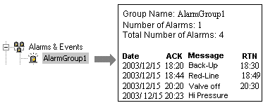
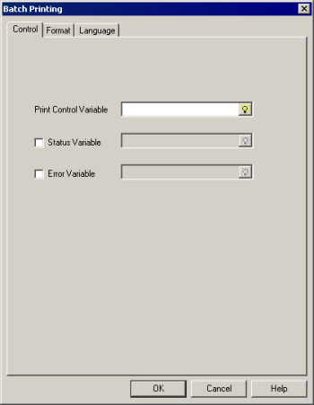
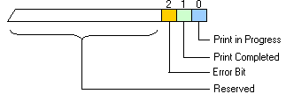
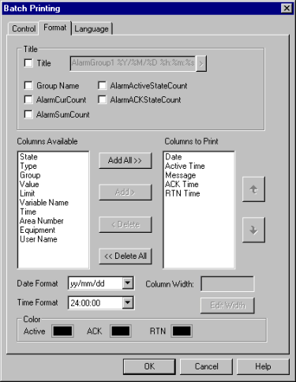
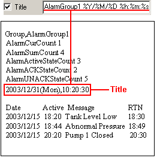
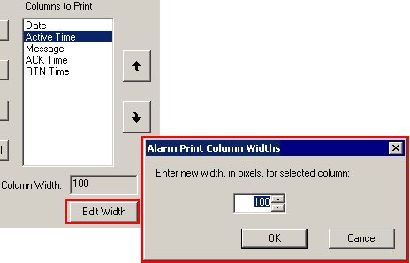
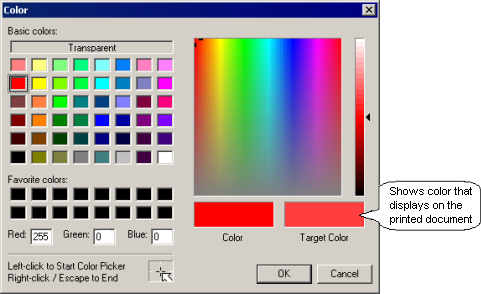
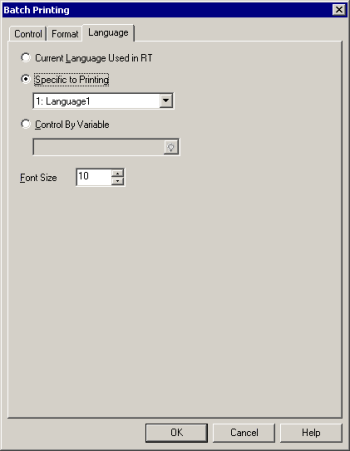
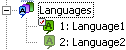
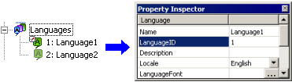

|
|
|
|
|
|
|
|
Use Batch Printing to print all the alarm and event messages of the selected alarm group, event group, or alarm category. The value of the Print Control Variable defines the printing format. The following sample shows batch printing for alarm messages in Alarm Group 1.

Each alarm group, event group, or alarm category can have different settings for Batch printing.

In the Property Inspector for the alarm group, event group, or alarm category, select Enabled in the Batch Print property, and click  to open the Batch Print dialog box.
to open the Batch Print dialog box.
In the Batch Print dialog window's Control Tab, set up the Print Control Variable, Status Variable, and Error Variable.

|
Property |
Description |
||||||||||
|
Print Control Variable |
Define an integer variable whose value controls when to print and in what format: Active, History, or Log.
For events, you can only use the History and Log formats. |
||||||||||
|
Status Variable |
Select the check box and define an integer variable whose bit status indicate the print status.  When using both the Status Variable and Error Variable, and when the bit 2 of the Status Variable turns on, the error number is written to Error Variable.
|
||||||||||
|
Error Variable |
Select the check box and define an integer variable that stores the error returned by the printer. For more information on the error number stored, see the following note. |

Some printer errors may not change the Status variable. The Status variable may remain in a print state (Bit 0, value=1) and output an error value.
To catch all error types, check the Error variable while Print is in progress.
See Section 28.2.4.2 Error Codes: Alarm Errors for a list of the error variable codes.
After printing is complete, you can reset the Print/Save Clear Option in the Property Inspector for the alarm group. See Section 16.3.5.4, Clear Option When Printing.
In the Batch Printing dialog box, click the Format tab.

In the Title area, select the items to print at the beginning of the printout.
|
Property |
Description |
||||||||||||||||||
|
Title |
In addition to alarm or event information, you can add a title with a maximum of 32 characters. In this title you can add the current date and time using the following placeholders.
|
||||||||||||||||||
|
Group |
Prints the name of the alarm group, event group, or alarm category. When configuring batch printing for an event group, the alarm-specific check boxes are grayed out. |
||||||||||||||||||
|
AlarmCurCount |
Prints number of active alarms. Not available for an event group. |
||||||||||||||||||
|
AlarmSumCount |
Prints the total number of alarms that have become active. Not available for an event group. |
||||||||||||||||||
|
AlarmActiveStateCount |
Prints the number of alarms that are currently in Active state. Not available for an event group. |
||||||||||||||||||
|
AlarmACKStateCount |
Prints the number of alarms that are currently in the ACK state. Not available for an event group. |
||||||||||||||||||
|
AlarmUNACKStateCount |
Prints the number of alarms that are currently in the UNACK state. Not available for an event group. |

See image below for an example of Title printout.

Add the Columns you wish to print using the Add and Delete buttons.
You can change the Column order by using the or buttons.
Specify the width of each column (maximum of 999 pixels): select a column from the Columns To Print box, click the Edit Width button to open the Alarm Print Columns Width dialog box, and specify the column width.

For more information on each item, see Section 16.2.6, Setting Up an Alarm and Event Summary.

In Batch printing of alarm and event messages, the Column Width settings will not work when using the Text Driver.
When you add the Date column, set the Date display format in the Date Format property.
If you add Active Time, ACK Time, or RTN Time, set the Time display format in the Time Format property.
In the Color option, specify the colors for Active, Acknowledged (ACK), Not Acknowledged (UNACK), and Returned to Normal (RTN) alarm messages.
Click the colors to access the Color Palette, and then use the Color Palette to specify the color. For information on using the Color Palette, see Section 7.3.1, Color Palette.

The color option is only available when a color printer is selected as the Printer Type in the Target properties. For more information on color printers, see Section 27.1.1, Selecting a Printer.
AlarmUNACKStateCount and UNACK color are hidden if Alarm Behavior is Optional ACK.
You can only use the following eight colors: Black, blue, green, aqua, purple, red, yellow, and white. If you select a color other than the eight colors, the color is reduced and printed in the color that is displayed in the Black/White window.

You can only specify the font color. You cannot specify the background color for alarm printouts.
When using Batch Print, you can print alarm messages in a specific user language. When configuring batch printing for an event group, the Language tab is not available. The language is the system language you are in when the event is logged.
In the Batch Printing dialog box, click to display the Language Tab.

Select a language method: Current Language Used in RT, Specific to Printing, or Control By Variable.
|
Property |
Description |
|
Current Language Used in RT |
Prints in the user language that is displayed on the panel at runtime.
|
|
Specific to Printing |
Select the language to use at the time of printing from the languages created in the Language folder.  |
|
Control By Variable |
Specify an integer variable, and store the language number of the language that you want to use at the time of printing.
 |
Select a Font Size to use with the selected language.

With the specified language, you can print the following items in the alarm summary:
Alarm messages
Title (date, alarm time, acknowledge time)
Alarm type messages (HiHi, Hi, Lo, LoLo)
Alarm state messages (Alarm, ACK, UNACK, Recovery)